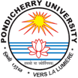
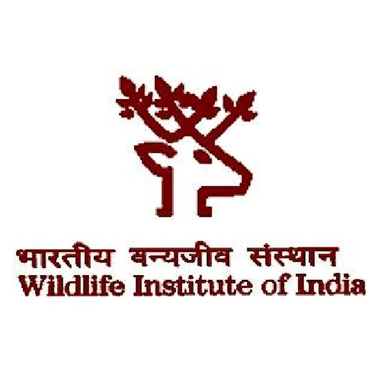
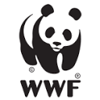
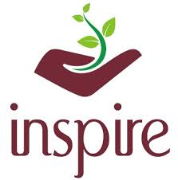

Curriculum Vitae
Education
Doctor of Philosophy in Biology
Starting Oct. 2026
German Primate Center (DPZ) & Georg-August-Universität Göttingen
- Funded by the DAAD Doctoral Scholarship.
Doctor of Philosophy in Biology
Aug. 2024 – June 2026
Ashoka University, Sonipat
CGPA: 3.77/4
Discontinued due to personal reasons.

Master of Science in EcologyPondicherry University, Puducherry
CGPA: 9.58/10
Bachelor of Science in Zoology
July 2019 – June 2022
St. Xavier’s College (Autonomous), Ahmedabad
CGPA: 8.16/10
Research Experience
 Master’s Thesis Project
Master’s Thesis Project
Eastern Himalayas, Arunachal Pradesh
Title: Symphony of survival: A bioacoustic approach to studying mixed-species bird flocks.
Advisors: Dr. K Sivakumar & Dr. Umesh Srinivasan.
Advisors: Dr. K Sivakumar & Dr. Umesh Srinivasan.
- Studied mixed species bird flock dynamics using bioacoustics.
Summer Intern
Eaglenest Wildlife Sanctuary, Arunachal Pradesh
- Estimated arthropod prey availability for insectivorous birds across an elevational gradient.

Field AssistantCAMPA DUGONG Conservation Project, Marine National Park
- Assisted WII research team at Gulf of Kutch in conducting field surveys, awareness programs, and sorting seagrass associated macrobenthic fauna.
🦅
Volunteer - Kanha Bird Survey
Feb. 2022
Kanha Tiger Reserve, Madhya Pradesh
- Worked under the Wildlife and Nature Conservancy (WNC) Indore, for the annual bird count.

Volunteer - Camera TrappingSatpura-Pench Corridor, Madhya Pradesh
- Worked with the WWF India central Indian landscape team for the Occupancy survey and Camera trapping in the Satpura-Pench Tiger Reserve Corridor project.
🐾
Volunteer - Occupancy Survey
June 2021
Melghat Tiger Reserve, Maharashtra
- Volunteered in the second phase of "Occupancy of tiger, co-predator and prey species in the Satpuda-Melghat Corridor" under Wildlife Research and Conservation Society.
🗺️
Intern - GIS and Remote Sensing
May 2021
WALMI, Madhya Pradesh
- Interned with the Water and Land Management Institute Bhopal for GIS and Remote Sensing training.
🏕️
Volunteer - Wildlife Tourism
March 2021
Kanha Tiger Reserve, Madhya Pradesh
- Worked with Centre for Wildlife Sciences to collect data for examining nature viewing preferences of tourists visiting Indian protected areas.
🦅
Volunteer - Vulture Census
March 2021
Anuppur, Madhya Pradesh
- Worked with the Madhya Pradesh Forest Department for the Vulture Census.
🌿
Intern - People’s Biodiversity Register
Jan. 2021
Achanakmar Tiger Reserve, Chhattisgarh
- Worked with the Chhattisgarh Forest Department and FRLHT for the documentation of Rural PBR in the Core region.
🐾
Volunteer - Occupancy Survey
Oct. 2020
Satpura Tiger Reserve, Madhya Pradesh
- Volunteered for the "Occupancy of tiger, co-predator and prey species in the Satpuda-Melghat Corridor" project under Wildlife Research and Conservation Society.
🌿
Intern - People’s Biodiversity Register
March 2020 - Sept. 2020
Haryana, India
- Worked with the Haryana Forest Department and FRLHT for the documentation of the Rural and Urban PBR of three districts.
Teaching Experience
Graduate Assistant
Jan. 2025 – May 2025
Ashoka University, Sonipat
- Life in the Neighbourhood (UG): Taught bioacoustics, birding, and behavioural experiments.
- Ecological Methods (Grad): Taught applications of bioacoustics, occupancy modelling, and camera trapping.
Skills
Field Skills
Bioacoustics
Camera Trapping
Mist Netting & Ringing
VIE Tagging
Sign Survey
Technical & Analytical
Network Analysis
Spatial Analysis
Image/Video Processing
Software
R
Python
ArcGIS & QGIS
Raven Pro & Audacity
BORIS
LaTeX
Publications
Vocal species are more central in Eastern Himalayan mixed-species bird flocks
Ornithology, 115(2), ukag021 (2026)
DOI: 10.1093/ornithology/ukag021
From genes to ecosystems: A multidisciplinary approach to understanding and conservation challenges for the short-tailed sea snake Hydrophis curtus (Shaw, 1802) in India
Journal of Marine Studies, 2(3), 21664 (2025)
DOI: 10.29103/joms.v2i3.21664
Awards & Grants
 DAAD Doctoral Scholarship (€1,400 / month)
DAAD Doctoral Scholarship (€1,400 / month)
Deutscher Akademischer Austauschdienst
 ASAB Conference Attendance Grant (£500)
ASAB Conference Attendance Grant (£500)
Association for the Study of Animal Behaviour
IEC Conference Attendance Grant (₹35,000)
2025
Koita Centre for Digital Health, Ashoka University
ATBC Seed Research Grant ($1,000)
2025
Association for Tropical Biology and Conservation

DST INSPIRE Scholarship (₹4,00,000)Department of Science and Technology
 GATE Ecology & Evolution (AIR 74)
GATE Ecology & Evolution (AIR 74)
 Bronze Medallist
Bronze Medallist
State-level Kudo Championship
Conferences
ASAB Winter Conference 2025
Edinburgh, UK
- Delivered a talk titled "A Song to Die for: Acoustic Eavesdropping by Mosquitoes on Anuran Calls in the Western Ghats, India" at the Edinburgh Royal College of Physicians.
🌍
International Ethological Congress on Behaviour 2025
Aug. 2025
Kolkata, India
- Delivered an oral presentation titled "Vocal Species are More Central in Eastern Himalayan Mixed-Species Bird Flocks" at the Collaborations in Nature symposium.
🐅
Indian Wildlife Ecology Conference
June 2024
NCBS Bangalore, India
- Presented my master’s thesis work titled "Symphony of Survival: Bioacoustic Approach to understanding Mixed-species bird flocks in Eastern Himalayas" in the open session.
🌍
Student Conference on Conservation Science (SCCS)
Oct. 2024
- Participated in workshops ranging from Bio-acoustics and R programming to Behavioural Sciences.
🎓
National Conference on Education for Sustainable Development
Dec. 2022
Pune, Maharashtra
- Attended the national level conference conducted by Bharati Vidyapeeth University in collaboration with Engagement Global, Germany.
🔬
SCIENCE MANTHAN
Feb. 2020
Gujarat, India
- Presented a Scientific poster on the history, symptoms, precautions, and treatment of COVID-19.
Courseworks & Workshops
🦇
Bat Taxonomy, Acoustics and Biogeography
April 2024
- Kerala Forest Research Institute, Thrissur, Kerala.
RS and GIS Applications on Biodiversity Conservation
Oct. 2021
- Aligarh Muslim University, Aligarh.
🌿
Basis of Conservation
Aug. 2020
- Green Works Trust, Mumbai.
Basis of Rescue and Rehabilitation of Freshwater Macrofauna
June 2020
- Wildlife Institute of India, Dehradun.